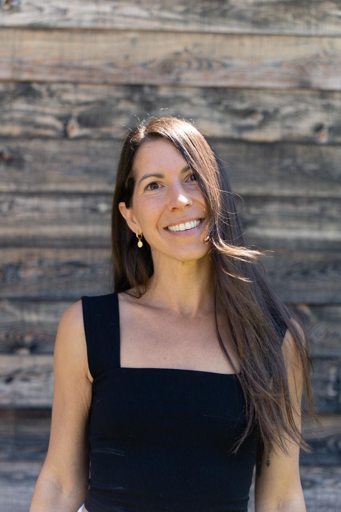

L'alimentation
Tu vois enfin pourquoi tu as faim deux heures après avoir mangé. Ce que tu mets dans ton assiette parle à tes hormones bien avant de parler à ton poids.

Formation en ligne
30+ leçons en ligne · À ton rythme · Accès à vie
Un parcours simple, naturel et puissant pour lire ce que ton corps te dit.
Un shift vers plus d'énergie, une meilleure gestion du stress et un meilleur équilibre.
Tu manges bien. Tu bouges. Et pourtant, une prise de poids que rien n'explique.
Le stress te rentre dedans. L'anxiété est devenue la trame de fond de tes journées.
Tu te réveilles déjà fatiguée.
Beaucoup de femmes vivent ces changements à partir de 35 ans. Souvent les trois en même temps. Ça porte un nom : la périménopause.
C'est incomplet, et c'est décourageant. Parce que tes hormones ne travaillent pas dans le vide : elles répondent à ton sommeil, ton alimentation, ton système nerveux, ta lumière, ton mouvement. Et ces choses-là, c'est toi qui les construis, chaque jour.
Ce sont ces choses-là que tu peux influencer.
Chaque leçon t'explique un mécanisme concret, puis te propose un exercice d'observation. Tu n'apprends pas quoi faire. Tu apprends à voir ce que ton corps te dit déjà.
Tu vois enfin pourquoi tu as faim deux heures après avoir mangé. Ce que tu mets dans ton assiette parle à tes hormones bien avant de parler à ton poids.

Tu comprends pourquoi neuf heures de sommeil ne te reposent pas. Le repos n'est pas ce qui vient après. C'est ce qui rend le reste possible.

Tu reconnais le moment où tu bascules, avant que ça déborde. Un corps qui se croit en danger ne fait pas de tes hormones une priorité.

Tu sais quoi faire les jours où tu n'as rien à donner. Ton corps n'a pas besoin d'être poussé plus fort. Il a besoin d'être lu plus finement.

Tu comprends pourquoi tu te réveilles à trois heures du matin. Ta nuit ne se prépare pas le soir. Elle se prépare au réveil.

Tu arrêtes de te demander pourquoi tu n'es pas la même chaque semaine. Ton corps n'est pas instable. Il est cyclique, et il l'a toujours été.

Tu découvres pourquoi ce qui marche pour ta sœur ne marche pas pour toi. Tes minéraux, tes hormones, ton métabolisme forment une signature qui n'appartient qu'à toi.
Tu n'as pas besoin de travailler les sept. Tu as besoin de trouver lequel est le tien.
Qu'est-ce que mon corps essaie de me dire ?
30+ leçons, organisées autour des sept piliers
Leçons en texte, entre 10 et 15 minutes chacune
Accès à vie, tout disponible dès l'inscription
Pour toi si
Tu veux comprendre ce qui se passe dans ton corps, pas seulement recevoir des consignes
Tu as essayé des choses qui fonctionnaient pour d'autres, sans résultat pour toi
Tu cherches une base solide avant une consultation, ou entre deux
Pas pour toi si
Tu cherches un protocole précis à suivre à la lettre, ou une solution rapide : ce parcours demande de l'observation avant l'action
Tu vis des symptômes intenses ou inquiétants : commence par consulter
Ce n'est pas un protocole, et ça ne remplace pas un suivi personnalisé.

Qui t'accompagne
Naturopathe diplômée · Coach santé
Simple, naturelle et puissante. Ce sont les trois mots qui me définissent le plus. En Human Design, je suis une Manifesteur-Générateur et je l'incarne totalement au quotidien : j'ai cette capacité innée de manifester ce que je veux et d'ouvrir les chemins, pour moi et les autres autour.
Maman, entrepreneure et ancienne athlète de haut niveau, j'ai un parcours non linéaire et atypique.
Via Émilie Naturelle, j'ai créé ma propre approche en naturopathie, 100 % sur-mesure, et j'ai accompagné plus de 700 femmes en transition hormonale dans la dernière année. Mon parcours me donne la capacité de tenir un espace d'accompagnement solide pour d'autres femmes.
Mes aspirations
Non. C'est un parcours éducatif.
Émilie Gendron n'est pas médecin et n'est pas membre du Collège des médecins du Québec. Rien dans ce parcours ne constitue un diagnostic, une prescription ou un traitement.
Ce que tu y trouves : des explications sur le fonctionnement de ton corps, et des exercices pour observer tes propres signaux. Ce que tu n'y trouves pas : quelqu'un qui te dit ce que tu as ou ce que tu dois prendre.
Pour tout ce qui relève du diagnostic ou du traitement, ton médecin reste la bonne personne.
Oui. Rien dans ce parcours ne contredit un traitement médical, et rien ne t'invite à en modifier un.
Le contenu porte sur le terrain dans lequel tes hormones travaillent : ton sommeil, ton alimentation, ton système nerveux, ta lumière, ton mouvement. Ces leviers restent pertinents peu importe le traitement que tu suis.
Toute question sur ta médication revient à la personne qui te l'a prescrite.
Probablement, oui.
Les changements de cette transition commencent souvent bien avant qu'on y mette un nom, parfois dès la fin de la trentaine. Beaucoup de femmes passent des années à chercher ailleurs ce qui relève de cette période.
Et le contenu ne porte pas uniquement sur les hormones. Il porte sur le sommeil, le système nerveux, l'alimentation et le mouvement, qui concernent ton corps à n'importe quel âge.
Ce parcours ne détermine pas où tu en es. Il t'aide à comprendre ce que tu observes.
Chaque leçon se lit en 10 à 15 minutes.
Il n'y a aucun horaire imposé. Certaines femmes lisent tout en deux semaines, d'autres étalent sur six mois. Une leçon par semaine est un rythme confortable.
Ce qui prend du temps, ce n'est pas la lecture. Ce sont les exercices d'observation, qui demandent quelques jours chacun. C'est là que le parcours travaille vraiment.
Si tu n'as le temps que d'une leçon par mois, tu auras quand même fait le parcours au bout d'un an. Ce n'est pas un échec, c'est un rythme.
Oui, les leçons sont en texte.
C'est un choix, pas une limite. Le texte se lit à ton rythme, se relit facilement, se consulte en dix minutes sans écouteurs et sans besoin d'être seule. Une vidéo t'impose son tempo, un texte suit le tien.
Certaines leçons renvoient vers des ressources externes, comme des méditations guidées, quand le format audio sert mieux la pratique.
Oui. Tout le parcours est accessible depuis un téléphone, une tablette ou un ordinateur, avec le même compte.
C'est d'ailleurs le format le plus utilisé : une leçon de dix minutes se lit très bien dans une salle d'attente ou avant de dormir.
Accès à vie. Tu peux revenir quand tu veux, autant de fois que tu veux.
C'est important, parce que ton corps va continuer de changer. Une leçon qui ne te parle pas aujourd'hui peut devenir exactement ce dont tu as besoin dans huit mois.
Commence par consulter.
Des symptômes intenses, nouveaux ou qui t'inquiètent méritent une évaluation par une professionnelle ou un professionnel de la santé. Des saignements très abondants, une douleur importante, une fatigue qui nuit à ton fonctionnement, des étourdissements : ce sont des signaux qui demandent un regard clinique, pas un parcours éducatif.
Ce parcours viendra après, et il rendra cette consultation plus utile. Tu arriveras avec des observations précises plutôt qu'avec une impression.
Pas exactement, et c'est volontaire.
Chaque leçon t'explique un mécanisme, puis te propose un exercice d'observation. Les actions concrètes viennent après, une fois que tu as compris ce qui se passe chez toi.
Si tu cherches une liste d'instructions à suivre à la lettre, ce parcours va te frustrer. Si tu as déjà suivi des listes sans résultat, tu comprendras vite pourquoi on procède autrement.
Non. Aucun plan alimentaire à suivre, aucun aliment interdit, aucun calcul de calories.
La section alimentation explique comment les macronutriments parlent à tes hormones, et propose d'observer la composition de tes repas. Le mot d'ordre y est l'observation, pas la restriction.
Non.
Le parcours parle de nutriments et de leur rôle, mais il ne te vend rien et ne te prescrit rien. La supplémentation y est traitée avec prudence, en rappelant qu'elle devrait reposer sur une évaluation individuelle plutôt que sur une lecture générale.
C'est la crainte la plus fréquente, et elle est légitime.
Le parcours est organisé en sept piliers, ce qui te donne une carte plutôt qu'une liste. Chaque leçon est autonome et tient en quelques minutes.
Et le principe de fond joue en ta faveur : tu ne cherches pas à tout appliquer. Tu cherches à identifier où est ton nœud, puis à agir là. Beaucoup de leçons te serviront surtout à comprendre pourquoi elles ne sont pas ton problème.
Commence par l'introduction, elle pose le cadre. Ensuite, tu peux suivre l'ordre proposé ou naviguer selon ce qui te préoccupe.
Cela dit, les sept piliers s'influencent mutuellement. Si tu ne lis que la section alimentation, tu risques de manquer ce qui explique pourquoi elle ne suffit pas chez toi.
Non, et ce n'est pas son but.
Ce parcours te donne la compréhension générale. Une consultation te donne la lecture de ton cas précis : tes analyses, ton historique, ton profil.
Les deux se complètent. Comprendre ton écosystème te permet d'arriver avec des questions précises, de comprendre ce qu'on te propose, et de l'appliquer en conscience plutôt qu'en suivant des consignes.
L'autonomie ne remplace pas l'accompagnement. Elle le rend plus puissant.
Oui, avec une nuance.
Les leçons sur le cycle menstruel te concerneront moins directement. Tout le reste (système nerveux, sommeil, alimentation, minéraux, métabolisme, rythme circadien, mouvement) reste entièrement pertinent, et souvent davantage.
Le parcours est écrit pour la périménopause, mais son fond porte sur le terrain, pas sur une phase précise.
Avis de non-responsabilité médicale
Objectif éducatif. L'ensemble des contenus, conseils et tests proposés (y compris HTMA et bilans salivaires) a pour unique but de vous informer et de soutenir votre mieux-être global par des moyens naturels.
Limites de pratique. Je ne suis pas médecin. Conformément à la loi, je ne pose aucun diagnostic, je ne prescris aucun médicament et je ne traite aucune maladie. Les analyses fonctionnelles proposées servent à observer le terrain biologique et non à dépister des pathologies.
Votre responsabilité. Ces recommandations ne remplacent en aucun cas l'avis, le diagnostic ou le traitement d'un professionnel de la santé qualifié. Si vous avez des inquiétudes concernant votre santé ou si vos symptômes persistent, consultez votre médecin.
Prix : à venir
Entrer dans ta zone de pouvoirAccès à vie, tout disponible dès l'inscription.